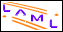

Lecture 1 of Multi Demo
Kurt Nørmark
Department of Computer Science, Aalborg University, Denmark
Title page
Abstract
Lecture overview
First slide
First annotated slide
References from this lecture

Generated: Monday November 14, 2011, 09:22:06